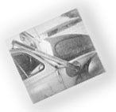

This idea isn't foreverybody, but it's helped one MOTHER reader keep winter's cold at bay.
I make my living prospecting, and-as you might guess-traipsing around the New Mexican desert in my old VW bug has, more than once, resulted in my having to spend an unexpected night away from home. Desert evenings can get pretty danged cold, too . . . and running the vehicle's heater for hours on end is expensive. So, three years back, I decided to install a new auto-warming system. I put a woodstove in the clunker!
The job was pretty easy to accomplish, too. I simply discarded the front passenger seat (I don't run into that many hitchhikers out among the Gila monsters, anyway) ... lined the newly opened area with fiberglass . . . cut a few holes in the auto body for ventilation . . . bolted a small sheet-metal "ice fishing" stove to the heatshielded floor . . . and ran the stovepipe out through the side of the car, after which it was connected to a length of flex-pipe that I bolted to the vehicle's roof.
My "bugstove" may look a little strange, but it's served me very well. On one occasion, for example, I was stranded in a freak blizzard. A big old Lincoln Continental sat out the storm beside me, and before morning that gas guzzler had run itself dry just keeping the heater going. Its passengers spent the wee hours stomping in circles around the car to stay warm. I, however, was able to get a snug night's rest (disturbed, now and then, by my neighbors' cussing) . . . and, in the morning, while the unfortunate folks waited for clear roads and a tow truck to allow them to continue their journey, I was able to lift their spirits with fresh-brewed coffee!
EDITOR'S NOTE: Although Wally Hesse has been quite pleased with his system, we can't recommend that you attempt to duplicate his project. The inherent dangers of such an undertaking include carbon monoxide buildup as well as fire-would, in our opinion, outweigh the ad vantages.
|
 |
|
|